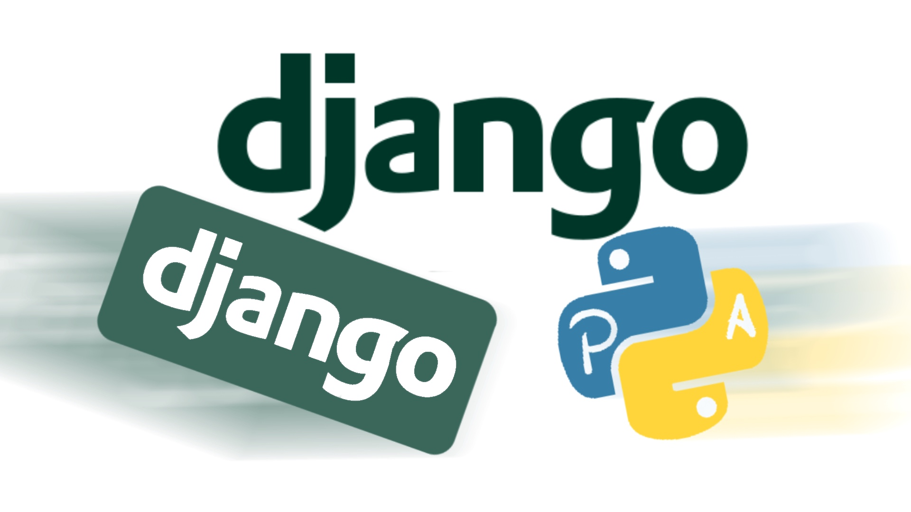

Django es un marco de desarrollo web de código abierto basado en Python que sigue el paradigma arquitectónico modelo-vista-controlador (MVC). Primero se diseñó para operar sitios web orientados a noticias para World Company of Lawrence, Kansas, y se distribuyó al público bajo una licencia BSD en julio de 2005; lleva el nombre del músico de jazz gitano Django Reinhardt.
El objetivo principal de Django es facilitar la creación de sitios web complicados. Django enfatiza la reutilización, la conexión y extensión de componentes, el desarrollo rápido y la filosofía "Don't Repeat Yourself" (DRY). Python se usa en todos los componentes del marco, incluidas las configuraciones, los archivos y sus modelos de datos.
